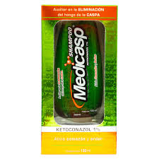
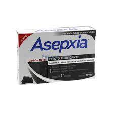
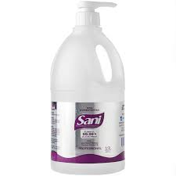
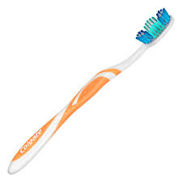
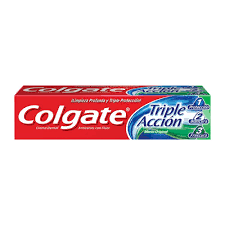
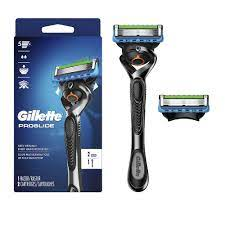
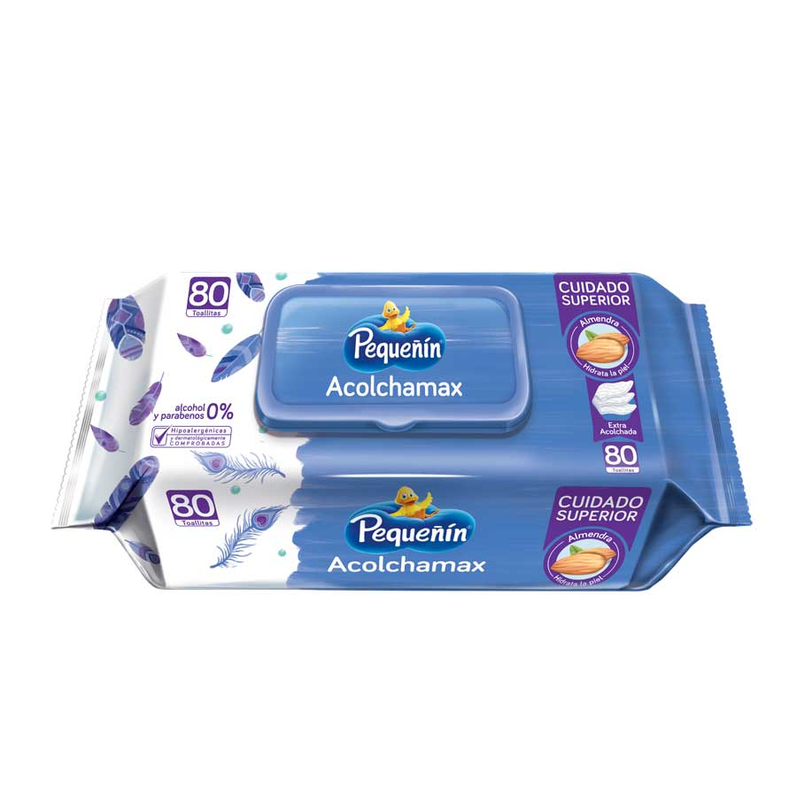
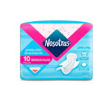

More Website Templates @ TemplateMonster.com - July 30, 2014!

Shampoo auxiliar en la eliminación del hongo de la caspa ya que su acción ayuda a evitar molestias como: cabello quebradizo, débil, opaco y con puntos blancos, así como irritación, enrojecimiento.
12,00 $.

Remueve impurezas de la piel, disminuyendo la grasa y el brillo dejando una sensación de frescura. Gracias a su fórmula con ácido salicílico, disminuye y ayuda a prevenir imperfecciones. Carbón activado y máxima concentración de ácido salicílico. Especialmente diseñada para la limpieza de la piel mixta con imperfecciones, eliminando puntos negros y reduciendo el tamaño de los poros.
4,00 $

Producto antiséptico utilizado para la limpieza y desinfección de las manos. Reduce la transmisión de infecciones sin la necesidad de agua y jabón. Contiene alcohol etílico al 69% v/v que mata el 99,99% de los gérmenes que causan enfermedades.
7,00 $

Te ayudará a lograr una higiene bucal completa, pues cuenta con cerdas circulares que remueven delicadamente las manchas de los dientes, devolviéndoles su blancura natural, además, cuenta con una punta de ángulo dual para limpiar eficazmente las áreas de difícil acceso en la boca. Es un cepillo dental con limpiador de lengua que elimina bacterias y restos de comida que causan mal aliento.
1,50 $

Crema Dental de uso diario con flúor para dientes sensibles. Cuenta con el poder de la tecnología de la arginina. Clínicamente comprobada.
1,00 $

Las maquinillas de afeitar Gillette ProGlide para hombre proporcionan la precisión de un afeitado Gillette con comodidad y estilo. Esta maquinilla de afeitar para hombre cuenta con una tira lubricante mejorada con más lubricantes en comparación con Gillette Fusion) para mayor comodidad y deslizamiento diseñado para darte una gran experiencia de afeitado. Las microaletas suaves se estiran suavemente y suavizan la piel mientras que el micropeine guía tu cabello hacia la hoja, dándote un afeitado cercano.
16,00 $

Toallitas Húmedas Pequeñín ACOLCHAMAX hechas con fibras de origen natural y biodegradables. Tela libre de plástico. Ofrecen un cuidado superior, gracias a su fórmula con almendras, ayudan a hidratar y proteger la piel.
6,00 $

Son mas gruesitas, pero igualmente cómodas. Su cubierta tela tipo algodón además de tener los beneficios de los extractos de algodón, es muy suave con tu piel.
2,00 $
Producto farmacéutico empleado para la prevención, diagnóstico y/o tratamiento de una enfermedad o estado patológico, o para modificar sistemas fisiológicos en beneficio de la persona a quien se le administra.
0,50 $
{kind=link}
{kind=link}
{kind=link}
{kind=link}
{kind=link}
{kind=link}
{kind=link}
{kind=link}
{kind=link}